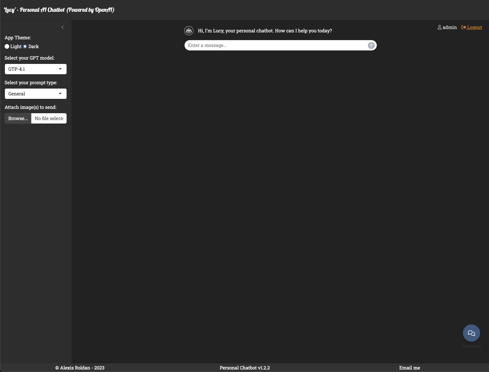

Chatbot de IA Multimodal con Análisis de Imágenes y Contexto Persistente
2025-10-18

MIA - Asistente Inteligente Multimodal 🤖✨
MIA - Asistente Inteligente Multimodal 🤖✨
Problema: Geometría analítica confusa Solución MIA: - Fotografió su ejercicio de coordenadas - MIA explicó paso a paso la distancia entre puntos - Proporcionó 3 ejercicios similares para practicar - Resultado: De 6/10 a 9/10 en el examen
Problema: Balanceo de ecuaciones químicas Solución MIA: - Subió foto de ecuación desequilibrada - MIA mostró método sistemático de balanceo - Explicó la ley de conservación de masa - Resultado: Ahora balancea solo cualquier ecuación
Problema: Análisis de poemas complejos **Solución MIA**: - Compartió poema de Neruda - MIA identificó metáforas y simbolismo - Explicó contexto histórico del autor - Resultado: Mejoró comprensión lectora 40%
Problema: Cronología de independencias americanas **Solución MIA**: - Subió mapa de América del siglo XIX - MIA creó línea temporal interactiva - Conectó eventos entre países - Resultado: Aprobó con honor su examen final
MIA - Asistente Inteligente Multimodal 🤖✨
MIA - Asistente Inteligente Multimodal 🤖✨
MIA - Asistente Inteligente Multimodal 🤖✨
MIA - Asistente Inteligente Multimodal 🤖✨
MIA - Asistente Inteligente Multimodal 🤖✨
“Antes odiaba matemáticas. Ahora con Lucy entiendo todo paso a paso. ¡Subí de 5 a 9 en mi boletín!”
- Sofía, 15 años, Bachillerato
“MIA me ayudó con química orgánica cuando nadie más podía. Explica tan claro que parece fácil.”
- Miguel, 17 años, Preparatoria
“Mi inglés mejoró muchísimo. MIA corrige mis ensayos y explica por qué cada error está mal.”
- Carla, 16 años, Secundaria
“Trabajo de noche y estudio de día. MIA está siempre disponible cuando puedo estudiar.”
- Roberto, 19 años, Universidad
“Para mi tesis de biología, Lucy analizó mis fotos de laboratorio mejor que algunos profesores.”
- Patricia, 22 años, Licenciatura
“Mis padres están felices porque ya no necesito tutor presencial. MIA es mejor y más barata.”
- Andrés, 14 años, Secundaria
MIA - Asistente Inteligente Multimodal 🤖✨
MIA - Asistente Inteligente Multimodal 🤖✨
MIA - Asistente Inteligente Multimodal 🤖✨
¡Únete a Miles de Estudiantes Exitosos!
🚀 Comienza Tu Transformación Académica - Crear Cuenta Gratis - Ver Demo en Vivo - Unirse a Comunidad Estudiantil
📚 Invierte en el Futuro de tus Hijos - Prueba gratuita por 30 días - Sin compromiso a largo plazo - Resultados visibles desde la primera semana - Soporte familiar completo
💻 Revoluciona tu Educación - Programa piloto sin costo - Capacitación incluida - Soporte técnico 24/7 - Resultados medibles
🔬 Potencia tu Enseñanza - Herramientas de vanguardia - Analíticas de progreso estudiantil - Reducción de carga de trabajo - Mejores resultados académicos
MIA - Asistente Inteligente Multimodal 🤖✨
MIA - Donde la Educación Se Encuentra con el Futuro
📧 Email: alexis.m.roldan.ds@gmail.com 🌐 GitHub: github.com/roldanalex/Personal-Assistant-AI 💬 WhatsApp: +51 999 xxx xxx (Soporte en Español)
¡Primeros 100 Estudiantes! - ✅ Acceso premium por 3 meses - ✅ Sesiones de tutoría ilimitadas - ✅ Soporte prioritario 24/7 - ✅ Herramientas avanzadas incluidas
🗓️ Hasta: 31 de Diciembre 2024
¿Listo para ser el próximo estudiante exitoso?
MIA - Asistente Inteligente Multimodal - Educación Personalizada con Inteligencia Artificial 🤖📚✨
MIA - Asistente Inteligente Multimodal 🤖✨